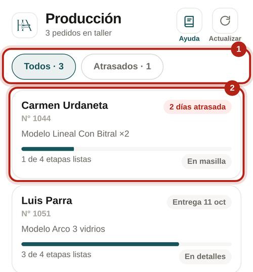
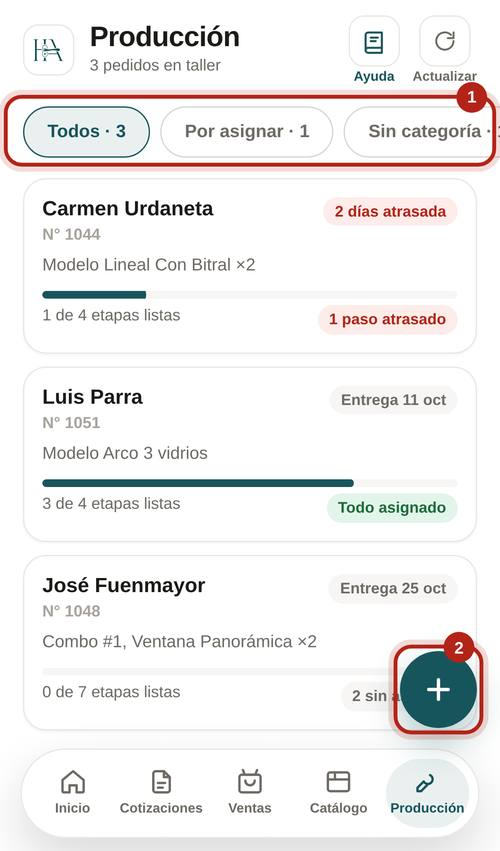
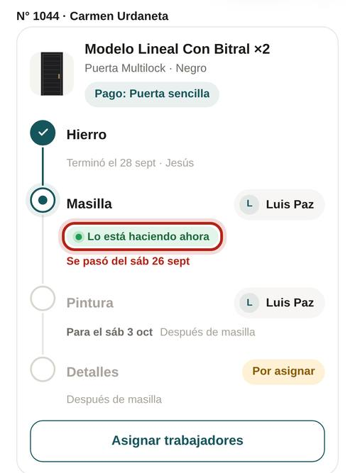
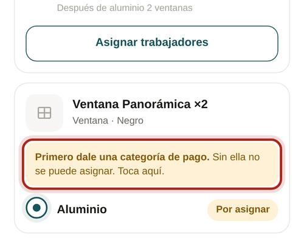
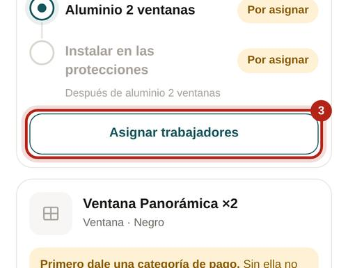
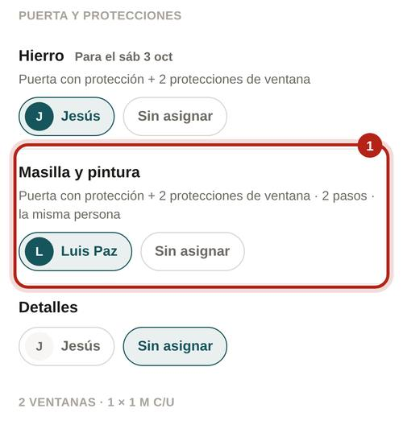
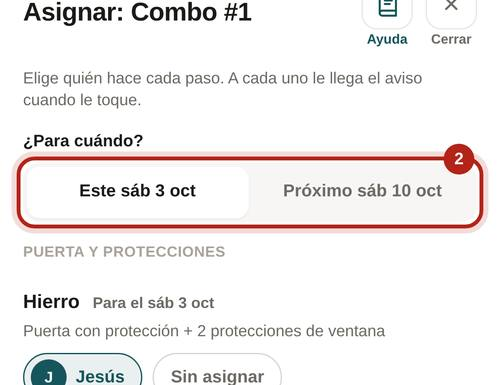
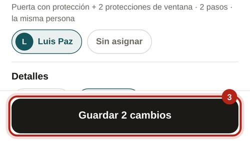
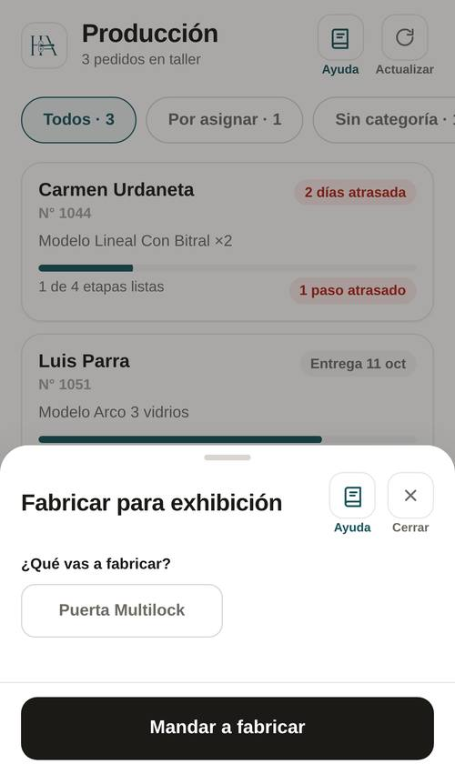
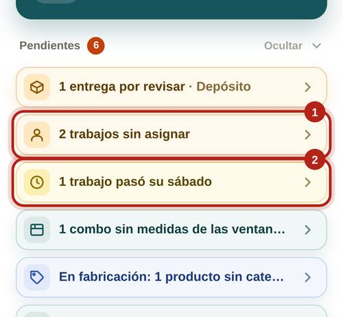

Cada oficio hace su parte, en orden.
"Todos" o "Atrasados".
"Todos", "Por asignar", "Sin categoría" y "Atrasados".
Cuántos pasos lleva, si va atrasado y en qué paso va.
Cuántos pasos lleva y si falta asignar, le falta categoría o va atrasado.


Toca un pedido. Cada producto muestra sus pasos.

Cuando un pedido llega al taller te llega el aviso "Pedido en fabricación: asigna quién lo fabrica".
Sin categoría no se puede asignar ni calcular el pago.

Uno por producto. Te dice qué incluye cada bloque.

Salen solo los trabajadores de ese oficio. Masilla y pintura se asignan juntas a la misma persona; aluminio e instalar también.

Este sábado o el próximo. Es el sábado en que se le paga si lo termina.

Al que ya puede empezar le llega "Nuevo trabajo". A los que esperan a un compañero les llega "Ya te toca" cuando el anterior termina. Si le quitas uno que ya podía empezar, le llega "Ya no tienes este trabajo".

Para tener piezas hechas en la tienda, sin cliente.
Eliges qué es, el modelo, sus detalles y el precio en exhibición. Toca "Mandar a fabricar" y asigna como un pedido.

Les llegan a los administradores.
N° y cliente. "Asigna quién lo fabrica."
Quién, qué y en qué pedido. Te dice lo que sigue: "Asigna Masilla", "Revisa el avance" o "El pedido quedó listo".
En Inicio, "Pendientes":

A ti no te llegan avisos del taller. Cuando el pedido termina te llega "Pedido listo" (manual de Ventas).